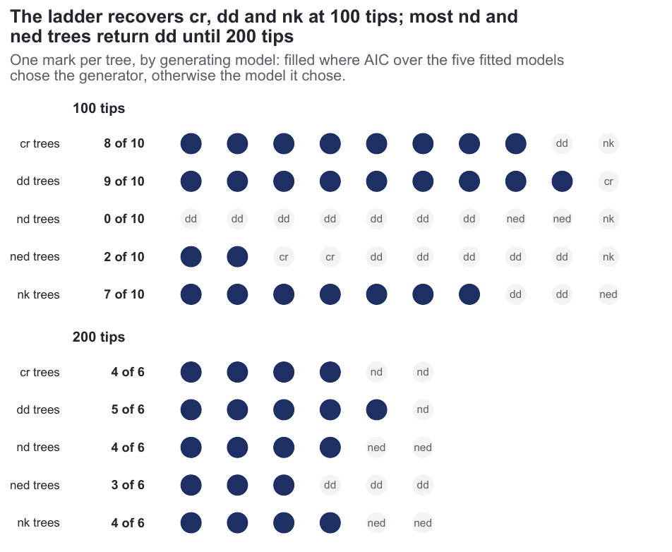

E23 — What does the one-call ladder estimate_rates(model = "all") choose?
| Status | complete (second pass, after the 2026-10-01 retry fix). 100-tip arm cap-limited on the lineage-level rungs; 200-tip arm clock-limited on nd, ned and nk. Extended by E27 (eight conditions, 20 trees) and E31 (the pendant-edge pair at 200 tips). Superseded by E47 (the conditioned ladder) when it reports; its cost numbers describe the build of the run and are historical |
| Package build | library e23, the commit after 4d6ef7f (the auto_bounds() retry fix); one rebuild printed f5bf6f1, and the build audit's range for it ends at f5bf6f1 |
| Driver / analysis | sim/E23-ladder.R; figure sim/figures-study.R |
| Data | results/E23/t100/ladder.csv (250 rows = 50 trees x 5 models), results/E23/t200/ladder.csv (150 rows = 30 x 5); first pass in results/E23/t*/pre-fix/ |
Question
Every selection rate before E23 was a pairwise contest (E12, E19, E21) or a path (E20). What a user runs is one call: estimate_rates(phy, model = "all") fits the ladder cr → dd → {nd, ned, nk}, each model started from the estimate of the model it nests with each model's box from auto_bounds(), and ranks them with compare_models(). E23 measures that call end to end, and its 200-tip arm is also a cost measurement of the ladder.
Design
| Parameter | Value | Meaning |
|---|---|---|
| generators | cr, dd, nd, ned, nk, exponential link |
the E20 generators |
| effects | nd, ned at \(\log 0.65 = -0.43\) per scale unit of \(D\) or ED; nk at \(+0.43\) per sd of \(K\) |
rate x 0.65 or x 1/0.65 at one scale unit |
| generating coefficients | \(\beta_D\) -0.155 / -0.174; \(\beta_{ED}\) -0.0982 / -0.104; \(\beta_K\) +0.154 / +0.159 (100 / 200 tips) | per unit, from design.rds |
| tips | 100 (observed 60-153) and 200 (128-317) | capacity recalibrated per size |
| turnover / crown | 0.10 / 15 | |
| trees | 10 a generator at 100 tips, 6 at 200 | 80 ladders |
draws / max_iter |
300 / 100 | |
| clock | 30 minutes per fit at 100 tips, 60 at 200 | |
| box | auto_bounds() per model |
|
| reading | the AIC winner (minimum AIC), as registered; the parsimonious reading (fewest parameters within 2 AIC) recomputed in ledger B and given beside it |
Amendment 2026-10-01. After 21 ladders (16 at 100 tips, 5 at 200) the workers had not finished a tree in eight hours. The time was in auto_bounds(): the forward simulator retried a clade that overflowed max_lin as if it had gone extinct, so a feasibility test at an exploding corner of a lineage-level box ran a hundred cap-sized simulations. The package now retries extinction only; on the stalled 100-tip dd tree the nd box takes 249 s instead of over 50 minutes unfinished. Both arms restarted from scratch; the first pass is kept under pre-fix/ and not mixed in. On a 97-tip nd tree of the first pass the five auto_bounds() calls took 52, 61, 273, 964 and 361 s against fits of 50, 161, 753, 597 and 702 s: the box was 43% of the ladder.
Pre-set rule
The winner is the generator on \(\ge 80\%\) of trees for cr and dd; for the three lineage-level generators the winner is the generator or a superset of it on \(\ge 80\%\); a lineage-level model wins on \(\le 10\%\) of cr and dd trees. Fits with an effective sample below 10 are reported and the rates they enter are marked sampler-limited.
Results
| tips | generator | n | generator chosen: min AIC / parsimony | chosen, cr/dd/nd/ned/nk (min AIC) | generator fit: ratio (q1-q3) | ESS | stops conv / cap / clock | median margin |
|---|---|---|---|---|---|---|---|---|
| 100 | cr |
10 | 0.80 / 0.90 | 8/1/0/0/1 | — | 300 | 10 / 0 / 0 | 1.5 |
| 100 | dd |
10 | 0.90 / 0.80 | 1/9/0/0/0 | \(\beta_N\) 1.06 (0.88-1.13) | 271 | 7 / 3 / 0 | 2.7 |
| 100 | nd |
10 | 0.00 / 0.00 | 0/7/0/2/1 | 0.49 (0.40-0.75) | 81 | 0 / 10 / 0 | 1.8 |
| 100 | ned |
10 | 0.20 / 0.10 | 2/5/0/2/1 | 0.52 (-0.15-1.74), sign 0.70 | 176 (1 < 10) | 1 / 9 / 0 | 2.8 |
| 100 | nk |
10 | 0.70 / 0.70 | 0/2/0/1/7 | 0.89 (0.63-1.02) | 48 (2 < 10) | 1 / 9 / 0 | 7.2 |
| 200 | cr |
6 | 0.67 / 0.83 | 4/0/2/0/0 | — | 300 | 6 / 0 / 0 | 1.8 |
| 200 | dd |
6 | 0.83 / 0.83 | 0/5/1/0/0 | \(\beta_N\) 0.85 (0.76-0.96) | 276 | 5 / 1 / 0 | 2.0 |
| 200 | nd |
6 | 0.67 / 0.67 | 0/0/4/2/0 | 0.77 (0.72-0.92) | 118 | 0 / 1 / 5 | 1.0 |
| 200 | ned |
6 | 0.50 / 0.50 | 0/3/0/3/0 | 1.04 (0.75-1.30) | 280 | 1 / 3 / 2 | 1.9 |
| 200 | nk |
6 | 0.67 / 0.67 | 0/0/0/2/4 | 0.74 (0.63-0.83) | 26 (1 < 10) | 1 / 4 / 1 | 10.1 |
Ratio: the generator rung's fitted coefficient over its generating value; sign 1.00 unless shown. ESS of 300. Stops are those of the generator's own rung on its own trees; margin is the winner's AIC lead. Under the parsimonious reading the 100-tip nd trees go to cr 1, dd 7, ned 2, and the 200-tip cr trees to cr 5, dd 1.
Across all trees: at 100 tips nd and nk rungs ended on the iteration cap on 43 and 48 of 50 (median ESS 75 and 77), ned on 33 with 11 converged (ESS 261); cr converged on 50 and dd on 38. At 200 tips the nd and ned rungs ended on the clock on 21 of 30 each and nk on 11, so the 200-tip arm is clock-limited. Where the generator was not chosen at 100 tips it sat a median 2.4 (nd), 4.2 (ned) and 3.1 (nk) AIC behind the winner. No cell is sampler-limited.
Cost: a whole ladder took a median 47 minutes at 100 tips (38-85 by generator, at most 103) and 3.4 hours at 200 tips (3.1-3.9 by generator, 1.3-8.8 overall); log-log slope of ladder time on tips 1.79.

cr, dd and nk trees mostly return their generator and nd and ned trees mostly return dd; at 200 tips the nd trees return nd or ned and two cr and one dd tree return nd.Conclusion
100 tips: clade-level half met, lineage-level half not met. The generator wins on 0.80 of cr and 0.90 of dd trees and a lineage-level model on 1 of 20 null trees (0.05). No lineage-level generator reaches 0.80: nk 0.70, ned 0.20, nd 0.00 (dd on 7 of 10). The ladder offers no superset of any lineage-level model, so "generator or a superset" is the generator alone. 200 tips: not met under the registered (minimum-AIC) reading: cr 0.67, and a lineage-level model, every time nd, wins on 3 of 12 null trees (0.25); under the parsimonious reading the null half holds (0 of 12, cr 0.83). The lineage-level generators reach 0.50-0.67, with the pendant-edge pair nd + ned chosen on all 6 nd trees. The 200-tip arm is clock-limited and every rate is a floor, on 6 trees a generator.
What E23 shows at 100 tips is that one call recovers the clade-level answer and a \(K\) effect of this size, and returns dd for most trees generated with either pendant-edge covariate at \(\log 0.65\); at 200 tips the lineage-level models separate from dd and the minimum-AIC reading admits nd on null trees. E27 and E31 repeat the ladder on 20 trees a cell; from emphasis f30a791 on, compare_models() reports the parsimonious choice, which is the reading those runs use.
The nd rung maximised the earlier D likelihood. Emphasis 4e0b9dd changed the D likelihood; before it the likelihood held the clade mean pendant age at its segment-end value, so \(D\) grew within a segment while the simulator held it constant; from it \(D\) is constant between events in both. On complete trees E44 measured d's \(\beta_D\) at 0.70 and 1.46 of its value under the earlier likelihood and 0.95 and 1.16 under the current one (nd at -0.35: 0.77 and 1.01). The nd counts here (chosen on 0 of 10 own trees at 100 tips, on 3 of 12 null trees at 200 by minimum AIC) are those of the earlier likelihood; E47 reruns the ladder.